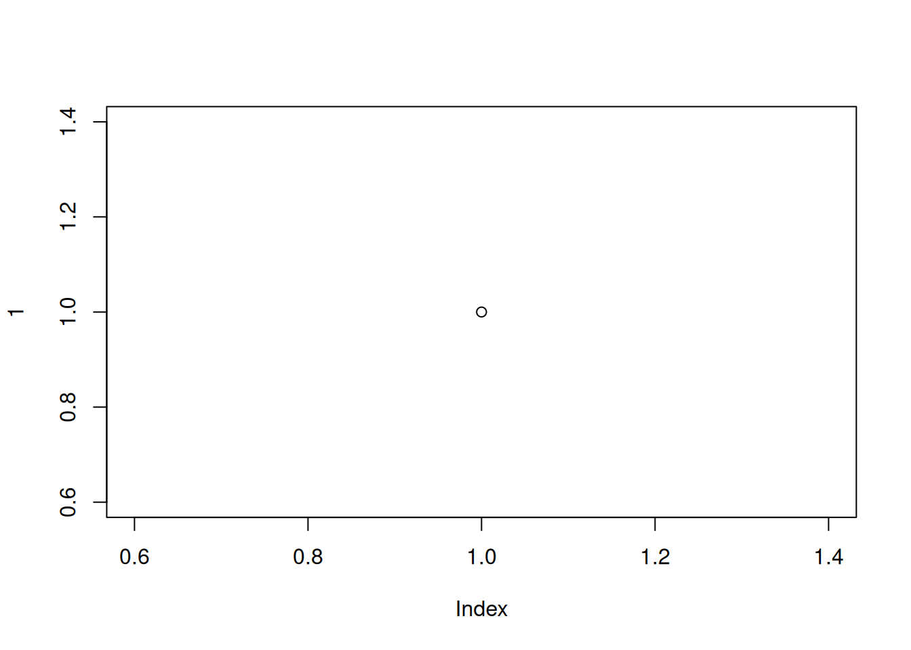

Show plot
plot(1, main="")
If a classical particle moves in an external force field \(\boldsymbol{F}(\boldsymbol{x})\) its motion is deterministic and it could be called a ‘deterministic process’. If the particle interacts with randomly distributed obstacles its motion is still deterministic, but the trajectory depends on the random characteristics of the obstacles, and maybe also on the random choice of the initial conditions. Such a motion is an example of a ‘stochastic process’, or rather a ‘random process’.
In a more abstract generalized definition, a stochastic process is a random variable \(X_{\xi}\) that depends on an additional (deterministic) independent variable \(\xi\), which can be discrete or continuous. In most cases it stands for an index \(\boldsymbol{\xi} \in \mathbf{N}\) or time \(t\), space \(x\) or energy \(E\). An almost trivial ubiquitous stochastic process is given by additive noise \(\eta(t)\) on a time-dependent signal \(s(t)\), i.e. \(X_{t}=s(t)+\eta(t)\). As a consequence, \(X_{t}\) is no longer continuous. The most apparent applications of stochastic processes are time series of any kind that depend on some random impact. A broad field of applications are time series occurring, for example, in business, finance, engineering, medical applications and of course in physics. Beyond time series analysis, stochastic processes are at the heart of diffusion Langevin dynamics, Feynman’s path integrals [43], as well as Klauder’s stochastic quantization [62], which represents an unconventional approach to quantum mechanics. Here we will give a concise introduction and present a few pedagogical examples. An important example of stochastic processes, which we have encountered already, are random walks as discussed in Section 4.2 [p. 57] and Chapter 5 [p. 71]. We will have ample opportunity to encounter further examples of stochastic processes in various sections of this book: electron temperature distribution as a function of the laser cord position (Section 23.2), energy dependence of a signal on top of a background (Section 23.3), time dependence of the magnetic flux in a plasma (Section 24.1.2), surface growth as a function of time (Section 24.4), the yearly onset of cherry blossom over time (Section 25.1), and eruptions of Old Faithful geyser as a function of time (Section 25.2.2). There are many more examples of stochastic processes covered in this book, namely all those cases where a function \(f(x)\) is measured which is corrupted by (additive) random noise. An important class of stochastic processes are Markov processes. They are introduced in Section 30.3 [p. 544] as the basis for a widespread stochastic integration technique, called ‘Markov Chain Monte Carlo’.
For the sake of clarity we consider only a single random variable \(X_{\xi}\) that might, however, depend on an \(L\)-component vector \(\lambda\) of independent random variables. For fixed \(\xi, X_{\xi}(\lambda)\) is an ordinary random variable, for which the CDF and PDF can be defined as usual:
\[ \begin{align*} F_{\xi}(x) & :=P\left(X_{\xi}(\lambda) \leq x\right) \tag{9.1a}\\ p_{\xi}(x) & :=\frac{d}{d x} F_{\xi}(x) \tag{9.1b} \end{align*} \]
The really new aspects of stochastic processes concern the dependence on the independent variable \(\xi\), which, as said before, typically represents time, space or energy.
Stochastic processes are referred to as continuous (discrete) stochastic processes if they are based on continuous (discrete) input variables \(\lambda\). That does not, however, imply that \(X_{\xi}(\lambda)\) as a function of \(\xi\) is necessarily continuous (discrete). As a counterexample consider a (discrete) Bernoulli experiment, whose outcome \(o \in\left\{o_{1}, o_{2}\right\}\) defines the global behaviour
\[ X_{t}(o):= \begin{cases}\cos (t) & \text { for } o=o_{1} \\ \exp (-t) & \text { for } o=o_{2}\end{cases} \]
This is a case of a discrete stochastic process which is continuous in \(t\). The opposite situation is given by the following process:
\[ X_{t}(\tau):=\boldsymbol{I}(t \leq \tau), \]
with \(\tau\) being a (continuous) exponential random variable. Apparently, \(X_{t}\) is discontinuous if considered as a function of \(t\), but the process is referred to as continuous.
Interesting aspects of stochastic processes are the \(\xi\)-dependence of individual realizations (samples)
\[ X_{\xi}^{*}:=X_{\xi}\left(\lambda^{*}\right) \]
for a fixed \(\lambda^{*}\), or the \(\xi\)-dependence of the mean, i.e.
\[ \begin{aligned} E(\xi)=\left\langle X_{\xi}\right\rangle & :=\int d x x p_{\xi}(x) \\ & =\int d^{L} \lambda p(\lambda) \int d x x \underbrace{p_{\xi}(x \mid \lambda)}_{\delta\left(x-X_{\xi}(\lambda)\right)} \\ & =\int d^{L} \lambda X_{\xi}(\lambda) p(\lambda) \end{aligned} \]
In the second line we have introduced the independent random variable \(\lambda\) via the marginalization rule and we have utilized the fact that \(x\) is uniquely determined if \(\xi\) and \(\lambda\) are specified. Another interesting aspect of stochastic processes is the autocorrelation in \(\xi\), i.e.
\[ A\left(\xi, \xi^{\prime}\right):=\left\langle\Delta X_{\xi^{\prime}} \Delta X_{\xi}\right\rangle=\int d^{L} \lambda X_{\xi^{\prime}}(\lambda) X_{\xi}(\lambda) p(\lambda)-\left\langle X_{\xi^{\prime}}\right\rangle\left\langle X_{\xi}\right\rangle . \]
The autocorrelation plays a crucial role in MCMC, as outlined in Section 30.3 [p. 544]. As a simple introductory example we consider a one-dimensional random walk on a lattice, with sites \(x \in \mathbb{Z}\). In addition, we assume a parabolic potential \(v(x)=x^{2}\), in order to avoid an increasing variance, which we found for the unrestricted random walk in Section 4.2 [p. 57]. Let \(X_{t}\) be the position of the walker at discrete time \(t\) and in each time step the walker has only three choices: stay or move one step forward or backward. That is, \(X_{t+1}=X_{t}+\Delta X\). A possible choice for the probability \(P\left(\Delta X \mid X_{t}, \mathcal{I}\right)\) that the walker will be at site \(X_{t+1}\) in the next time step can be defined via the Metropolis-Hastings algorithm (see Section 30.3 [p. 544]), resulting in
\[ \begin{aligned} P\left(\Delta X= \pm 1 \mid X_{t}, \mathcal{I}\right) & =\min \left(\frac{1}{2} \exp \left\{-\beta \mp 2 \beta X_{t}\right\}, 1\right) \\ P\left(\Delta X=0 \mid X_{t}, \mathcal{I}\right) & =1-P\left(\Delta X=+1 \mid X_{t}, \mathcal{I}\right)-P\left(\Delta X=-1 \mid X_{t}, \mathcal{I}\right) \end{aligned} \]
This process is actually a ‘Markov process’ as the next step depends on the actual position, but otherwise it has no memory. In Figure 9.1 the time evolution of a few individual random walks \(X_{t}\) with \(\beta=0.05\) is depicted. The walks always start at \(X_{0}=0\). In addition, the sample mean \(\overline{X_{t}}\) and sample variance \(\overline{\left(\Delta X_{t}\right)^{2}}\), obtained from 1000 independent repetitions of such random walks, are displayed. As expected from symmetry, the sample mean is \(\bar{X}_{t} \approx 0\). The sample variance initially increases linearly with time, according to a diffusion process, but then levels off due to the parabolic potential, which prevents the walkers from deviating too far from the origin. In Figure 9.1(b) the autocorrelation is depicted, which has been computed from the same sample of random walks. Here the autocorrelation of a single random walk is defined as
plot(1, main="")
Figure 9.1 (a) Three individual random walks, all starting at \(X_{0}=0\), are depicted as jagged lines in different shades of grey. The time is expressed in units of the total time \(T=1000\). In addition, the sample mean (thick solid line) and variance (dashed line) of \(N=1000\) independent random walks are displayed. (b) The corresponding scaled autocorrelation function \(A(\Delta t)\) versus lag size \(\Delta t\).
\[ \begin{aligned} \tilde{A}(\Delta t) & :=\frac{1}{t_{1}-t_{0}+1} \sum_{t=t_{0}}^{t_{1}} \Delta X_{t+\Delta t} \Delta X_{t} \\ \Delta X_{t} & :=X_{t}-\overline{X_{t}} \end{aligned} \]
The autocorrelation is determined in the time window ranging from \(t_{0}=100\) to \(t_{1}=900\). The first 100 steps have been discarded, in order to enter the region where \(\left\langle X_{t+\Delta t} X_{t}\right\rangle\) is independent of \(t\), then the process is said to be ‘homogeneous’. There are a couple more subtleties to be accounted for in computing autocorrelations numerically, which are, however, immaterial for the basic understanding of this topic. In Figure 9.1 the scaled autocorrelation function \(A(\Delta t):=\tilde{A}(\Delta t) / \tilde{A}(0)\), averaged over the sample, is shown. We see that the autocorrelation decays exponentially, which is a typical behaviour. A fit of \(\exp \{\Delta t / \xi\}\) to the data defines the autocorrelation length \(\xi\). We recognize that the random walk has a rather long autocorrelation length \(\xi \approx 20\), i.e. there is a long-range correlation between fluctuations. For a small autocorrelation \(A(\Delta t) \approx 0\), it is necessary that \(\left\langle X_{t+\Delta t} X_{t}\right\rangle\) changes sign frequently as a function of \(t\). Apparently, the autocorrelation length defines a typical time window in which the walk is either above or below the mean value. More details on autocorrelation functions of Markov processes are given in Section 30.3 [p. 544].
In the next sections we focus on Poisson processes and various aspects of Poisson points. As mentioned before, we will encounter further examples of stochastic processes later in this book. For additional details on stochastic processes we refer the reader to [8, 159]. Readers particularly interested in mathematically rigorous definitions and properties of stochastic processes may look at [45].
We have introduced the Poisson distribution as a limiting case of the binomial distribution by keeping \(\mu=p N\) fixed and considering the limit \(N \rightarrow \infty\). We use this situation to generate ‘Poisson points’ as outlined in the next section.
We consider a finite interval \(\Omega_{L}=(0, L)\) of length \(L\), in which we generate \(N\) independent and uniformly distributed points. They are called ‘Poisson points’ (PPs). The point density is
\[ \begin{equation*} \rho:=\frac{N}{L} . \tag{9.2} \end{equation*} \]
We now select an arbitrary interval \(I_{x} \subset \Omega_{L}\) of length \(x\). The probability for an individual point to appear in \(I_{x}\) is, according to the classic definition,
\[ p=\frac{x}{L} . \]
The probability that \(n\) PPs land in \(I_{x}\) is therefore binomial. The mean number of points generated on \(I_{x}\) is
\[ \begin{equation*} \mu=p N=x \rho . \tag{9.3} \end{equation*} \]
Next we erase these PPs and start afresh, but this time we double both the length \(L\) and the number of points \(N\). We retain the interval \(I_{x}\). As the point density is the same, the mean number ( \(\mu\) ) of points in \(I_{x}\) is also the same. Upon repeating the doubling process we fulfil the requirements of the Poisson theorem ( \(\mu=p N=\) fixed and \(N \rightarrow \infty\) ). Hence, in the limit of \(N \rightarrow \infty,{ }^{1}\) we obtain a Poisson distribution
\[ \begin{equation*} P(n \mid x, \rho, \mathcal{I}):=e^{-\rho x} \frac{(\rho x)^{n}}{n!} . \tag{9.4} \end{equation*} \]
Next, we are interested in the PDF of the distances between Poisson points \(p(\xi \mid \rho, \mathcal{I})\), where \(\xi\) stands for the proposition \(\xi\) : The distance to the next Poisson point is within \([\xi, \xi+d \xi)\). The proposition requires that there is no Poisson point in the interval \([0, \xi)\), and there must be a Poisson point in the following interval \(d \xi\). Both events are logically independent. Both probabilities follow from the Poisson distribution \(P(n \mid x, \rho, \mathcal{I})\) given in equation (9.4) with \((n=0 ; x=\xi)\) and \((n=1 ; x=d \xi)\), respectively. This yields the sought-for probability
\[ P(\xi \mid \rho, \mathcal{I})=P(n=0 \mid \xi, \rho, \mathcal{I}) P(n=1 \mid d \xi, \rho, \mathcal{I})=e^{-\rho \xi} \rho d \xi \]
and the corresponding PDF is exponential.
\[ \begin{equation*} p(\xi \mid \rho, \mathcal{I})=\rho e^{-\rho \xi} . \tag{9.5} \end{equation*} \]
Its mean value is \(1 / \rho\), in accordance with the mean density of \(\rho\).
The distances between neighbouring PPs are exponentially distributed. Next we want to consider the distribution of the distance \(d_{n}\) between Poisson point \(m\) and \(m+n\). As the individual intervals are independent, the distances are independent of \(m\) and they are a sum of \(n\) independent and exponentially distributed random numbers. According to equation (7.68) [p. 130], such a sum is Gamma distributed.
[^5] ## Distance distribution of Poisson points
\[ \begin{equation*} p\left(p\left(d_{n} \mid \rho, \mathcal{I}\right)\right)=p_{\Gamma}\left(d_{n} \mid n, \rho\right)=\frac{\rho}{\Gamma(n)}\left(\rho d_{n}\right)^{n-1} e^{-\rho d_{n}} \tag{9.6} \end{equation*} \]
The derived exponential distribution suggests an alternative view of the generation process. So far the Poisson points have been generated by distributing the points homogeneously on an interval. In this way it is warranted that the points are independent of each other. Similarly, the distances between the points are i.i.d. For this reason also a sequential generation process can be used. We start at \(x=0\) and determine the next Poisson point \(x_{1}\) at a distance of \(\xi_{1}\) according to the exponential distribution equation (9.5). Then the next point \(x_{2}\) is generated at a distance \(\xi_{2}\), again derived from \(p(\xi \mid \rho, \mathcal{I})\), and so on. The Poisson points are then located at
\[ x_{n}=\sum_{i=1}^{n} \xi_{i} . \]
The PDF implies that the probability for the next PP being at a distance \(d \xi\) is given by
\[ p(d \xi \mid \rho, \mathcal{I}) d \xi=(1-\rho d \xi) \cdot \rho d \xi \]
This expression can be interpreted as the probability for no event \((1-\rho d \xi)\) in \(d \xi\) times the probability for one event \(\rho d \xi\) in the following infinitesimal interval \(d \xi\). In other words, the events in infinitesimal intervals are uncorrelated and the probability \(P_{d \xi}\) for an event in \(d \xi\) is analytic in \(d \xi\) :
\[ P_{d \xi}=\rho d \xi \]
As we will see in the next section, these features entail the Poisson distribution.
The Poisson process can also be defined by the two axioms derived before.
It would be straightforward to identify the underlying Bernoulli experiment and to derive the Poisson distribution as a limiting case. Here, however, we want to present a different approach, that is over the top for the present problem but turns out to be very useful in more complex situations. For instance, the same approach can be used to derive the ‘FokkerPlanck equation’ for drift-diffusion processes from random walks. The present problem is nicely suited to illustrate this idea. To begin with, we notice that the axioms imply
Next, we define the proposition
\[ A(n, x) \text { : The number of events in an interval of length } x \text { is } n \text {. } \]
The goal is the probability \(P(A(n, x) \mid \mathcal{I})\) for \(n\) Poisson points in the interval of length \(x\). The basic idea of the present approach is to derive a differential equation for the sought-for probability. To this end, we compute the probability for the interval of length \(x+d x\) by marginalization over all propositions \(A(m, x)\) for the interval of length \(x\) :
\[ P(A(n, x+d x) \mid \mathcal{I})=\sum_{m=0}^{\infty} P(A(n, x+d x) \mid A(m, x), \mathcal{I}) P(A(m, x) \mid \mathcal{I}) . \]
We can simplify this expression by taking advantage of the fact that only zero or one events can happen within the infinitesimal interval \(d x\). Hence, only two terms of the summation over \(m\) remain: \(m=n\) and \(m=n-1\). Contributions of higher order \(\left(O\left(d x^{2}\right)\right)\) can be neglected. Then
\[ \begin{aligned} P(A(n, x+d x) \mid \mathcal{I})= & P(A(n, x+d x) \mid A(n, x), \mathcal{I}) P(A(n, x) \mid \mathcal{I}) \\ & +P(A(n, x+d x) \mid A(n-1, x), \mathcal{I}) P(A(n-1, x) \mid \mathcal{I}) \\ = & (1-\rho d x) P(A(n, x) \mid \mathcal{I})+\rho d x P(A(n-1, x) \mid \mathcal{I}) \end{aligned} \]
So we obtain the desired differential equation
\[ \frac{d}{d x} P(A(n, x) \mid \mathcal{I})=\rho(P(A(n-1, x) \mid \mathcal{I})-P(A(n, x) \mid \mathcal{I})) . \]
Next we introduce a simplified notation \(P_{n}(x):=P(A(n, x) \mid \mathcal{I})\) and define \(P_{-1}(x)=0\), then the differential equation reads
\[ \begin{equation*} \frac{d}{d x} P_{n}(x)=\rho\left(P_{n-1}(x)-P_{n}(x)\right) \tag{9.7} \end{equation*} \]
The initial condition is given by
\[ \begin{equation*} P_{n}(0)=\delta_{n, 0} \tag{9.8} \end{equation*} \]
because there is no PP in an interval of zero size. This is actually a difference-differential equation, which can be solved by various means. Here we proceed using ‘generating functions’ because of their importance in many problems of probability theory: We define the generating function \(\phi(x, z)\) via the following series expansion:
Generating function
\[ \begin{equation*} \phi(x, z):=\sum_{n=0}^{\infty} P_{n}(x) z^{n} . \tag{9.9} \end{equation*} \]
Apart from the presence of the additional variable \(x\), it is the same object introduced in Section 2.1.3 [p. 21]. For arbitrary but fixed \(x, P_{n}(x)\) represent the coefficients of a Taylor expansion. The representation by \(\phi(x, z)\) has the same information as \(P_{n}(x)\) but certain advantages, as we have seen in Section 2.1.3 [p. 21] already. In particular, the probabilities \(P_{n}(x)\) are given by
\[ \begin{equation*} P_{\nu}(x)=\left.\frac{1}{v!} \frac{d^{v}}{d z^{v}} \phi(x, z)\right|_{z=0} . \tag{9.10} \end{equation*} \]
In order to obtain the differential equation for the generating function, we multiply equation (9.7) by \(z^{n}\) summed over \(n\). The result is
\[ \begin{align*} \frac{d}{d x} \underbrace{\sum_{n=0}^{\infty} P_{n}(x) z^{n}}_{\phi(x, z)} & =\rho(\underbrace{\sum_{n=0}^{\infty} P_{n-1}(x) z^{n}}_{z \phi(x, z)}-\underbrace{\sum_{n=0}^{\infty} P_{n}(x) z^{n}}_{\phi(x, z)}) \\ \frac{d}{d x} \phi(x, z) & =\rho(z-1) \phi(x, z) . \tag{9.11} \end{align*} \]
Along with the initial condition equation (9.8), which implies \(\phi(x, 0)=1\), the solution of the differential equation (9.11) reads
\[ \phi(x, z)=e^{\rho(x-1) z} \]
Eventually we obtain the sought-for probabilities \(P_{n}(x)\) via equation (9.10):
\[ P_{n}(t)=\left.\frac{1}{n!} \frac{d^{n}}{d x^{n}} e^{\rho(x-1) t}\right|_{x=0}=\frac{1}{n!}(\rho t)^{n} e^{-\rho t} . \]
This is - as expected - the Poisson distribution. We see that the Poisson distribution follows from very general assumptions. For that reason the distribution is ubiquitous in physics.
If we interpret the distance between neighbouring PPs \(t\) in a temporal way we have
\[ \begin{equation*} p(t \mid \tau)=\frac{1}{\tau} e^{-\frac{t}{\tau}}, \tag{9.12} \end{equation*} \]
with \(\tau\) being the mean ‘waiting time’. Let us assume a Poisson-distributed arrival time of buses at a bus stop. What is the mean waiting time for the next bus, when we are at the bus stop at a random instant of time? We could likewise ask: If we switch on a Geiger counter, how long does it take to the next signal, triggered by an alpha particle? Since the mean time between arrivals is \(\tau\), it seems reasonable to assume that the mean waiting time should be \(\tau / 2\). The correct answer, however, is \(\tau\), which may appear paradoxical since the remaining time to the next bus should be shorter than the entire interval between successive buses.
In the following, we will see how Bayesian probability theory provides the correct answer. The quantity to be determined is the probability density \(p\left(t \mid R_{I}, \tau, \mathcal{I}\right)\) for the waiting time \(t\), given that we arrived at a random instant \(t^{*}\) in time. The time \(t^{*}\) falls into a time interval \(I\) between successive buses. This is denoted by the proposition \(I_{t^{*}}\) : The time interval \(I\) of our arrival is determined by \(t^{*} \in I\). We proceed by introducing the length \(L\) of the arrival interval \(I\) via the marginalization rule
\[ \begin{align*} p\left(t \mid R_{I}, \tau, \mathcal{I}\right) & =\int_{0}^{\infty} \underbrace{p\left(t \mid L_{I}=L, I_{t^{*}}, \mathcal{I}\right)}_{\frac{1}{L} 1(0<t \leq L)}, p\left(L \mid I_{t^{*}}, \tau, \mathcal{I}\right) d L \\ p\left(t \mid I_{t^{*}}, \tau, \mathcal{I}\right) & =\int_{t}^{\infty} \frac{1}{L} p\left(L \mid I_{t^{*}}, \tau, \mathcal{I}\right) d L \tag{9.13} \end{align*} \]
Here we exploited the random arrival time \(t\), resulting in a uniform PDF within the interval \(I\). The quantity \(p\left(L \mid I_{t^{*}}, \tau, \mathcal{I}\right)\) is the PDF for the length of the interval selected as specified in \(I_{t^{*}}\). We proceed with Bayes’ theorem:
\[ p\left(L \mid I_{t^{*}}, \tau, \mathcal{I}\right)=\frac{p\left(I_{t^{*}} \mid L, \tau, \mathcal{I}\right) p(L \mid \tau, \mathcal{I})}{p\left(I_{t^{*}} \mid \tau, \mathcal{I}\right)} \]
The probability to arrive in an interval of length \(L\) is, according to the classical definition and in analogy with the dart problem of Section 7.2.1 [p. 94], proportional to its length \(L\)
\[ p\left(I_{t^{*}} \mid L, \tau, \mathcal{I}\right)=\kappa L \]
with an unknown parameter \(\kappa\). The PDF \(p(L \mid \tau, \mathcal{I})\) is the exponential distribution of neighbouring PPs. The expression in the denominator is a constant that can be combined with \(\kappa\) into a constant that is determined by the normalization, resulting in
\[ p\left(L \mid I_{t^{*}}, \tau, \mathcal{I}\right)=\frac{L}{\tau^{2}} e^{-\frac{L}{\tau}} \]
This is a special case of a Gamma distribution with \(\alpha=2\) and \(\beta=1 / \tau\). Hence, the mean interval length \(L\) is therefore
\[ \langle L\rangle=2 \tau . \]
Apparently, intervals selected by \(I_{t}\) * are longer than average.
Now, we proceed with equation (9.13):
\[ p\left(t \mid I_{t^{*}}, \tau, \mathcal{I}\right)=\frac{1}{\tau^{2}} \int_{t}^{\infty} e^{-\frac{L}{\tau}} d L=\frac{1}{\tau} e^{-\frac{t}{\tau}} \]
This proves that the waiting time has the same PDF as the interval length between successive buses. As we have seen, this counterintuitive result is due to the larger probability for an arrival in a long interval. This also clarifies why the first interval from an arbitrarily chosen point in time to the first event also has a mean duration of \(\tau\).
Assume \(\left\{t_{n}\right\}\) are Poisson points, obeying equation (9.12), and let \(N(t)\) denote the stochastic process which provides the number of Poisson points up to time \(t\) :
\[ N(t)=\sum_{n=0}^{\infty} \mathbb{I}\left(t \geq t_{n}\right) . \]
The probability for \(N(t)=n\) is of course given by the Poisson distribution. A representative result is depicted in Figure 9.2. Next we want to estimate the PDF for position \(x\) of the \(n\)th Poisson point. We can use the general considerations on order statistics derived in Section 7.6 [p. 118]. In order to find the \(n\)th Poisson point in \([t, t+d t), n-1\) PPs have to be located in the interval \([0, t)\). The corresponding probability is
\[ p(n-1 \mid t, \tau, \mathcal{I})=e^{-t / \tau} \frac{(t / \tau)^{n-1}}{(n-1)!} . \]
The probability for the next point being located in \([t, t+d t)\) is given by \(d t / \tau\). The product of the two independent probabilities results in a special Gamma distribution, which is also called the ‘Erlang distribution’ in the present context.
plot(1, main="")
Figure 9.2 Poisson points (crosses) and Poisson process \(N(t)\) for \(\tau=1\).
\[ \begin{equation*} p\left(t_{n}=t \mid \tau, \mathcal{I}\right)=\frac{\tau^{-n}}{\Gamma(n)} t^{n-1} e^{-t / \tau} . \tag{9.14} \end{equation*} \]
The expectation value of this position is
\[ \left\langle t_{n}\right\rangle=n \tau . \]
This result is in agreement with the expectations, since the mean distance of the points is given by \(\tau\). The Erlang distribution has been introduced in studies of the frequency of phone calls and is important for various types of queueing problems.
Next we will give some simple pedagogical examples. Realistic applications will follow in Part V [p. 333].
As a first example we consider shot noise, which is relevant in the measurement of individual photons. Suppose a light source emits photons with a mean rate of \(\lambda\) photons per time interval. The emission of the photons shall be uncorrelated and within an infinitesimal time interval at most one photon is being emitted. Therefore, the probability for the emission of a photon within \(d t\) is given by
\[ p=\lambda d t . \]
These are precisely the conditions for a Poisson process, and the probability to find \(k\) photons within a finite interval of length \(t\) is therefore
\[ P(n \mid N=t / d t, p=\lambda d t) \underset{d t \rightarrow 0}{\longrightarrow} e^{-\lambda t} \frac{(\lambda t)^{n}}{n!} . \]
Hence, shot noise obeys a Poisson distribution.
It is a common impression that all waiting queues proceed faster than our own. Is this just a distorted perception? Let us analyse the problem.
Let \(t_{0}\) denote our waiting time and \(t_{i}(i=1, \ldots)\) the waiting times in other queues. Let us assume that nobody experiences preferred treatment and that hence all \(t_{i}\) are subject to the same statistical fluctuations and are hence i.i.d.-distributed random variables with probability density \(p(t \mid \mathcal{I})\). We are interested in the probability that only the \(n\)th waiting time \(\left(t_{n}\right)\) is larger than ours \(\left(t_{0}\right)\). For a systematic treatment we define the following proposition. \(A_{n}\) : Only the \(n\)th waiting time \(\left\{t_{n}\right\}\) is greater than ours.
In order to compute the probability \(P\left(A_{n} \mid \mathcal{I}\right)\), we employ the marginalization rule to introduce the value \(t_{0}\) of our waiting time:
\[ P\left(A_{n} \mid \mathcal{I}\right)=\int P\left(A_{n} \mid t_{0}, \mathcal{I}\right) p\left(t_{0} \mid \mathcal{I}\right) d t_{0} \]
The expression \(A_{n}\) implies that the waiting times of the queues \(1-(n-1)\) are smaller than \(t_{0}\) and that \(t_{n}>t_{0}\). Since the waiting times are uncorrelated, we obtain
\[ P\left(A_{n} \mid \mathcal{I}\right)=\int \prod_{i=1}^{n-1} \underbrace{P\left(t_{i}<t_{0} \mid \mathcal{I}\right)}_{:=q\left(t_{0}\right) ; \text { independent of } i} \underbrace{P\left(t_{n}>t_{0} \mid \mathcal{I}\right)}_{=\left(1-q\left(t_{0}\right)\right)} p\left(t_{0} \mid \mathcal{I}\right) d t_{0} . \]
Now, \(q(t)\) is the CDF corresponding to \(p(t \mid \mathcal{I})\) and therefore \(p\left(t_{0} \mid \mathcal{I}\right) d t_{0}=d q\left(t_{0}\right)\). So, the integral simplifies significantly as
\[ P\left(A_{n} \mid \mathcal{I}\right)=\int q^{n-1}(1-q) d q=\frac{\Gamma(n) \Gamma(2)}{\Gamma(n+2)}=\frac{(n-1)!}{(n+1)!}=\frac{1}{n(n+1)} . \]
It is straightforward to verify the correct normalization:
\[ \begin{aligned} \sum_{n=1}^{\infty} P\left(A_{n} \mid \mathcal{I}\right) & =\sum_{n=1}^{\infty} \frac{1}{n(n+1)}=\lim _{L \rightarrow \infty} \sum_{n=1}^{L}\left(\frac{1}{n}-\frac{1}{n+1}\right) \\ & =\lim _{L \rightarrow \infty}\left(\sum_{n=1}^{L} \frac{1}{n}-\sum_{n=2}^{L+1} \frac{1}{n}\right)=\lim _{L \rightarrow \infty}\left(1-\frac{1}{L+1}\right)=1 . \end{aligned} \]
The surprising aspects of the result are:
This implies that on average, endless many queues are faster than ours. However, the mean is dominated by the tail of the distribution, because the median is only \(n\). \(=1.5\) since \(P\left(A_{1} \mid \mathcal{I}\right)=\frac{1}{2}\).
In conclusion, we want to simulate this queueing problem. As PDF for the waiting times we use uniform random numbers on the unit interval. The algorithm is as follows:
Generate a reference random number \(t_{0}\). Generate random numbers \(t_{n}\) until \(t_{n}>t_{0}\) and record \(n\). Repeat the experiment \(L\) times. Compute the mean and standard deviation of \(n\).
The result of a simulation run up to a maximum length \(L=1000\) is shown in Figure 9.3. Neither the mean value nor the standard deviation converge with increasing simulation length. This is to be expected, since both values diverge for \(L \rightarrow \infty\). Despite the high probability of \(2 / 3\) that the next or second next element already exceeds the value of the reference element, there is a non-negligible probability for the occurrence of very long waiting times (please note the logarithmic scale of the ordinate in Figure 9.3). In the present example the arithmetic mean at the end of the simulation is 548 and the standard deviation is 17151,30 times the mean value!
plot(1, main="")
Figure 9.3 Computer simulation of the queueing problem according to algorithm in equation (9.15). The number \(n(L)\) of faster queues is marked by dots. The running mean (solid line) and standard deviation (dashed line) are plotted versus the number of repetitions \(L\).
In its simplest form the pedestrian delay problem considers pedestrians arriving at random at a street with the goal of crossing it. The traffic is described by a Poisson process, where any structures due to traffic lights or the like are ignored. The central question is how long the pedestrian has to wait on average until the time gap between cars is big enough.
To be more specific, let \(\Delta T\) be the time the pedestrian needs to traverse the street and \(\tau\) the mean time gap between the Poisson events, i.e. the PDF for the Poisson events reads
\[ p(t \mid \tau, \mathcal{I})=\frac{1}{\tau} e^{-\frac{t}{\tau}} . \]
It is expedient to express all times in units of \(\tau\). Then the PDF reads
\[ p(t \mid \tau, \mathcal{I})=e^{-t} . \]
We seek to determine the PDF \(p(T \mid \mathcal{I})\) for \(T\), the waiting time of the pedestrian. To begin with, we introduce the proposition \(A_{n}\) : The first \(n\) intervals are too short and the interval \(n+1\) is long enough.
This proposition implies that the first time intervals \(t_{1}, \ldots, t_{n}\) are all smaller than \(\Delta T\) and for the last one we have \(t_{n+1} \geq \Delta T\). We will first determine the probability for \(A_{n}\) :
\[ \begin{aligned} P_{n}:=P\left(A_{n} \mid \Delta T, \mathcal{I}\right) & =\prod_{\nu=1}^{n} P\left(t_{\nu}<\Delta T \mid \mathcal{I}\right) P\left(t_{n+1} \geq \Delta T \mid \mathcal{I}\right), \\ P(t<\Delta T \mid \mathcal{I}) & =\int_{0}^{\Delta T} e^{-t} d t=1-e^{-\Delta T}:=F, \\ P(t \geq \Delta T \mid \mathcal{I}) & =1-F, \\ P_{n} & =F^{n}(1-F) . \end{aligned} \]
This is the geometric distribution. The mean and variance of the number of initially wrong intervals are therefore, according to equations (4.25b) and (4.25c) [p. 63] ,
\[ \begin{align*} \langle n\rangle & =\frac{F}{(1-F)}=e^{\Delta T}-1, \tag{9.16a}\\ \left\langle(\Delta n)^{2}\right\rangle & =\frac{F}{(1-F)^{2}}=e^{\Delta T}\left(e^{\Delta T}-1\right) . \tag{9.16b} \end{align*} \]
Next we determine the PDF for the waiting time \(T\) :
\[ p(T \mid \Delta T, \mathcal{I})=\sum_{n=0}^{\infty} p\left(T \mid \Delta T, A_{n}, \mathcal{I}\right) P_{n} . \]
We introduce the \(n\) random variables \(t=\left\{t_{1}, \ldots, t_{n}\right\}\), corresponding to the interval lengths, by the marginalization rule
\[ \begin{aligned} p\left(T \mid A_{n}, \Delta T, \mathcal{I}\right) & =\int_{0}^{\infty} \cdots \int_{0}^{\infty} d t^{n} p\left(T \mid t, \not A_{n}, \Delta T, \mathcal{I}\right) p\left(t \mid A_{n}, \Delta T, \mathcal{I}\right) \\ p(T \mid t, \mathcal{I}) & =\delta\left(T-\sum_{\nu=1}^{n} t_{\nu}\right) \\ p\left(t \mid A_{n}, \Delta T, \mathcal{I}\right) & =\prod_{\nu=1}^{n} p\left(t_{\nu} \mid t_{\nu}<\Delta T\right) \end{aligned} \]
Hence
\[ p\left(T \mid A_{n}, \mathcal{I}\right)=\int_{0}^{\Delta T} \ldots \int_{0}^{\Delta T} d t^{n} \delta\left(T-\sum_{\nu=1}^{n} t_{\nu}\right) \prod_{\nu=1}^{n} p\left(t_{\nu} \mid t_{\nu}<\Delta T, \mathcal{I}\right) . \]
We will not compute the PDF for T in full, but rather only the mean:
\[ \langle T\rangle=\sum_{n=0}^{\infty} \underbrace{\int_{0}^{\infty} T P\left(T \mid A_{n}, \Delta T, \mathcal{I}\right) d T}_{:=\langle T\rangle_{n}} P_{n} . \]
For the mean for given \(n\)
\[ \langle T\rangle_{n}=\int_{0}^{\Delta T} \ldots \int_{0}^{\Delta T} d t^{n} \sum_{\nu=1}^{n} t_{\nu} \prod_{\nu=1}^{n} p\left(t_{\nu} \mid t_{\nu}<\Delta T, \mathcal{I}\right) \]
we need the integral
\[ I:=\int_{0}^{\Delta T} t_{\nu} p\left(t_{\nu} \mid t_{\nu}<\Delta T, \mathcal{I}\right) d t_{\nu}=\int_{0}^{\Delta T} t \frac{e^{-t}}{F} d t=\frac{1-F}{F}\left(e^{\Delta T}-1-\Delta T\right) \]
Then \(\langle T\rangle_{n}=n I\) and \(\langle T\rangle=\langle n\rangle I\). Along with equation (9.16) we obtain the final result, which in original units reads
\[ \langle T\rangle=\left(e^{\Delta T / \tau}-1-\frac{\Delta T}{\tau}\right) . \]
This is a rather striking result as the time increases exponentially with the time \(\Delta T\) needed to cross the road. In particular, it presents an exponential disadvantage for handicapped or elderly people.
The rules of probability theory provide the means to transform probabilities. As a direct consequence of the sum rule and the product rule, Bayes’ theorem in equation (1.9) [p. 12] has been derived:
\[ P(a \mid d, \mathcal{I})=\frac{1}{Z} P(d \mid a, \mathcal{I}) P(a \mid \mathcal{I}) \]
The theorem allows us to relate the posterior distribution to the product of the likelihood and the prior PDF. The likelihood distribution is usually known and determined by the experimental setup (expressed by \(\mathcal{I}\) ) and the parameters \(a\) of the model. Prior probabilities, on the contrary, cannot be assigned solely based on the rules of probability theory, since the priors incorporate the assumptions underlying the inference process. Prior PDFs may also occur in a more indirect way, for example, if not all parameter values entering the likelihood are known. The unknown parameters \(\boldsymbol{a}\) can be marginalized:
\[ p(\boldsymbol{d} \mid \boldsymbol{b}, \mathcal{I})=\int p(\boldsymbol{d} \mid \boldsymbol{a}, \boldsymbol{b}, \mathcal{I}) p(\boldsymbol{a} \mid \boldsymbol{b}, \mathcal{I}) d a^{m} \]
resulting in a probability distribution on the left-hand side which is independent of \(\boldsymbol{a}\). However, the marginalization also requires the specification of a prior PDF \(p(\boldsymbol{a} \mid \boldsymbol{b}, \mathcal{I})\) for \(\boldsymbol{a}\), which ultimately cannot be provided by the rules of probability theory. A typical example for this situation is provided by Gaussian noise with zero mean and unknown variance. For the marginal likelihood the prior PDF for the standard deviation \(p(\sigma \mid \mathcal{I})\) needs to be specified. This is a generic property of Bayesian inference. The rules of probability yield a hierarchy of conditional probabilities, but at the very end there is always a prior probability that has to be provided from outside, based on the available information. There are three generic cases. (a) Ignorant priors: For parameters or densities without any additional information, except the definition of the problem. (b) Testable information: In addition to (a) exact information is available, typically in the form of equality constraints, e.g. the moments of the sought-for distribution, \(\Phi\{p(x \mid \mathcal{I})\}=0\). (c) Priors for positive additive distribution functions.
Next, we will discuss the first two cases in more detail. The third topic is addressed in Chapter 12 [p. 201] on the ‘quantified maximum entropy method’ (QME), which has been applied very successfully to form-free image reconstruction problems, for example, in astrophysics and plasma physics.